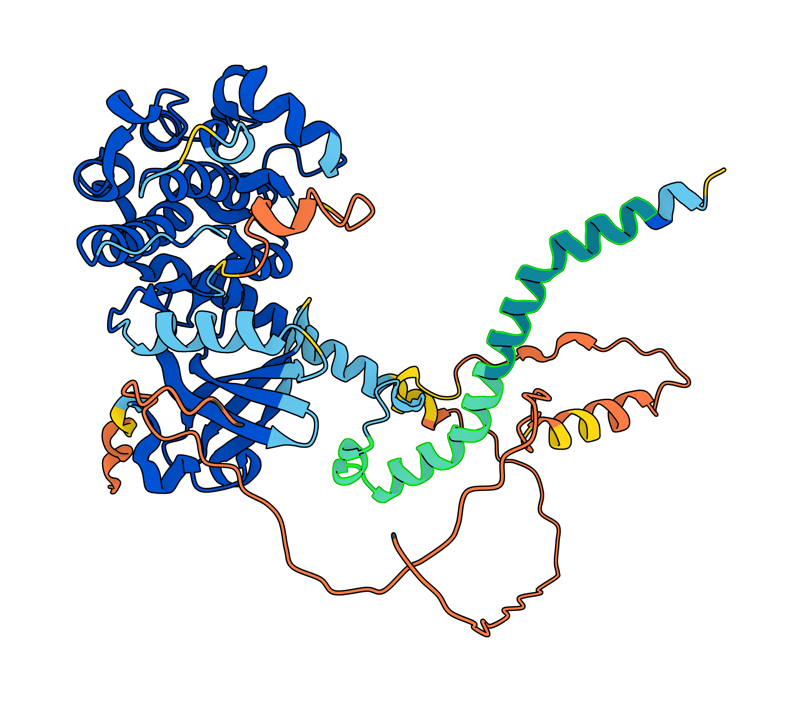

Why proteins fold the way they do
A protein is a chain of amino acids, and it always folds into the same shape. It's tempting to picture the chain "finding" its bonds like a key finding a lock — but the real driver is simpler and stranger: water. Some amino acids are hydrophobic (they disrupt water's structure), so water pushes them together into a buried core, away from itself, to stay as disordered as possible. The fold isn't chosen by the protein. It's forced by water's entropy.

Fold the simplified chain below yourself, one step at a time, and watch the score change as hydrophobic residues get buried or left exposed.
- Hydrophobic (H) — avoids water
- Polar (P) — fine with water
Dragging picks a fresh random chain of that length.
Your fold
Energy: 0 (residue 1 of 14 placed)
Use the arrow keys or WASD, or click the buttons above. Backspace undoes a step.
Your fold
Energy: 0
Optimal fold
Energy: 0
Water didn't need you to get it right — it always finds this shape.